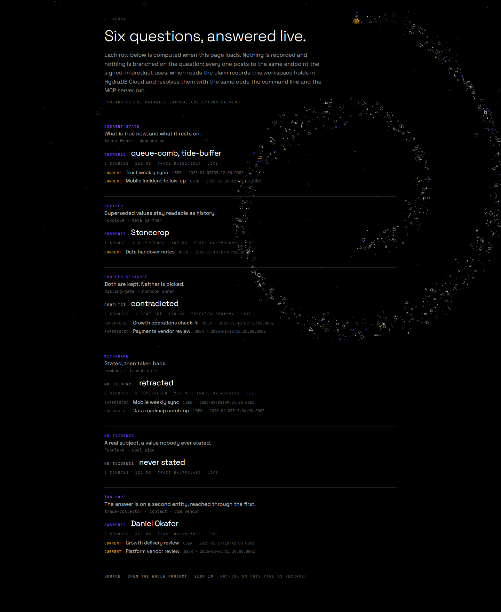
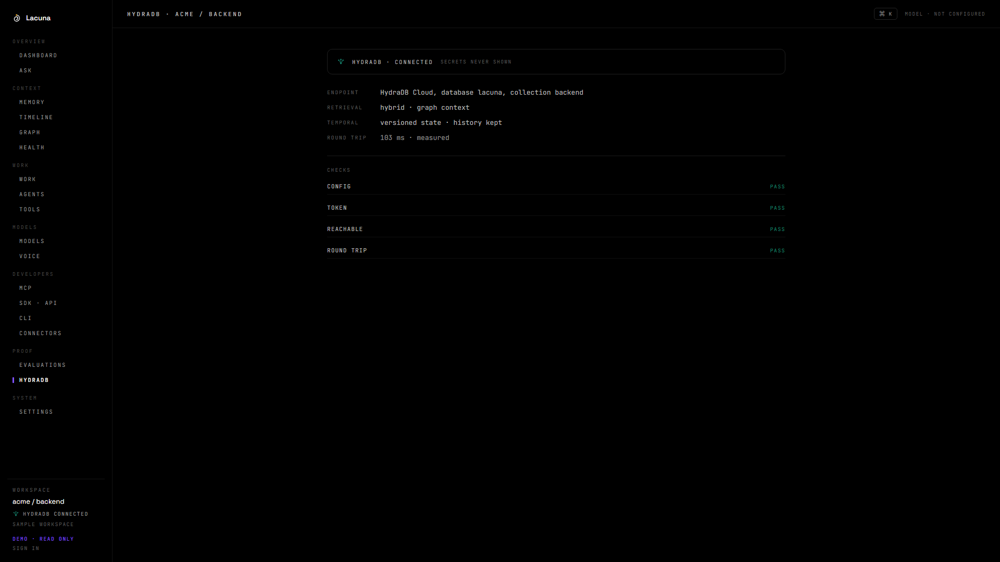

CONTEXT FOR LONG RUNNING AGENTS
ONE QUESTION, FOUR ANSWERS STILL IN MEMORY
Where does session state live now?
LACUNA · BUILT ON HYDRADB
Answers come from the claims, not from the text.


64 GOLD QUESTIONS · FIVE RETRIEVAL BASELINES · artifacts/bench/results.json
| recency | 46 | 1029 tokens |
| vector | 47 | 1311 tokens |
| lexical | 48 | 516 tokens |
| hybrid | 48 | 529 tokens |
| hybrid + 2 hop | 63 | 1843 tokens |
| Lacuna | 64 | 18 tokens |
SELF HOSTED NODE VERSUS HYDRADB CLOUD
64 questions, compared field by field. artifacts/hydra/cloud-parity.json
lacuna-five.vercel.app/judge
github.com/vaibhav4046/lacuna